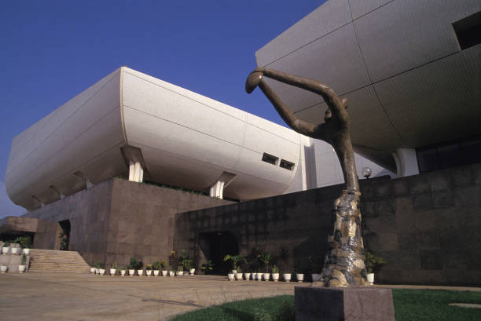

Famous Landmarks in Accra
Independence Arch
A symbol of Ghana's independence, the arch is located in Black Star Square.

Nkrumah Mausoleum
The final resting place of Ghana's first President, surrounded by scenic gardens.
Osu Castle
A historic fort located on the coast, offering a glimpse into Ghana's colonial past.

National Theatre
A striking modern building that hosts various cultural events and performances.

Jamestown Lighthouse
A historic lighthouse providing panoramic views of the city and the Gulf of Guinea.

Aburi Botanical Gardens
A lush green space perfect for picnics and nature walks, located in the Eastern Region of Ghana.

Centre for National Culture
A bustling marketplace for arts, crafts, and souvenirs, reflecting Ghanaian culture and heritage.

Legon Botanical Gardens
A serene park with lush gardens, a canopy walkway, and various recreational activities.